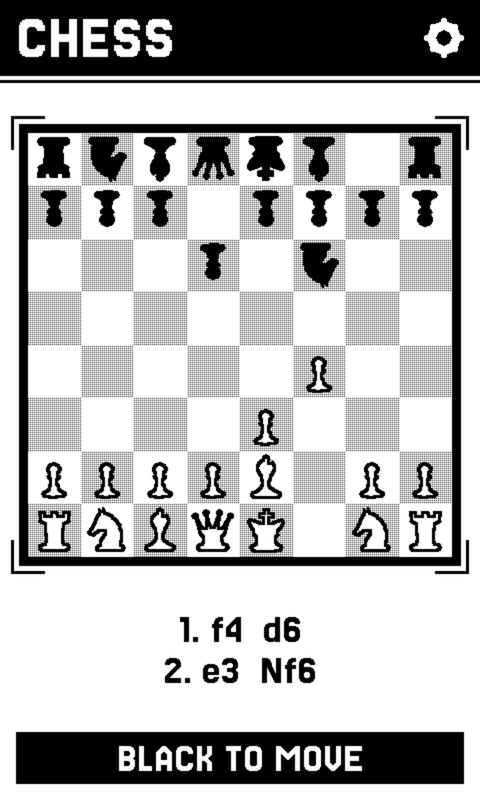
Chess
A full engine on the device, or a board between two of them. Pick up exactly where the position was left.
A fork of CrossPoint
So is a chess position, a flashcard, a hand of cards you are counting. Crossplay puts them on the Xteink X4 Pro, using the screen the way books already do, and lets two devices find each other with nothing to configure.
Click the screen to try it
What a still screen is good at
Reading was never the whole of it.
E-ink holds a page at no power for as long as you need it. So does a chess position, a flashcard, a logic grid, a hand of cards you are counting. The screen puts up a situation, you think, you decide. A panel that cannot animate is the right one for that, and so far it has been spent on books.
Everything here shares one shelf, one typeface and one set of controls, so what you learn in the first one works in the rest.

A full engine on the device, or a board between two of them. Pick up exactly where the position was left.
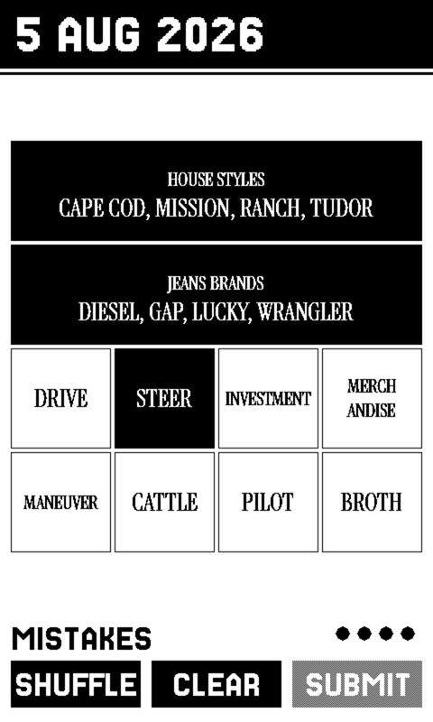
The daily word grid, set in a serif of its own, with an archive of past boards for when today's is done.
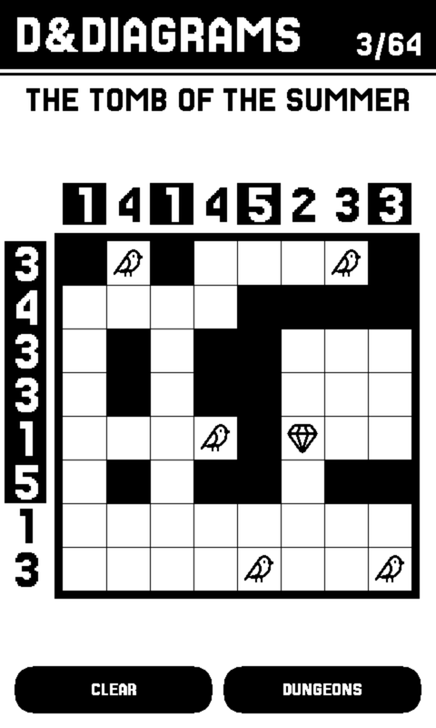
A nonogram whose clues are a dungeon. 64 of them, plus a tutorial that is a lesson rather than a level.
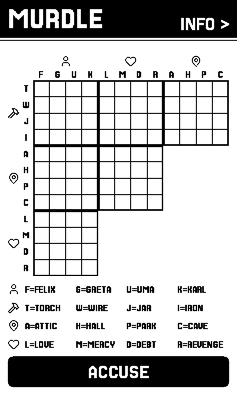
A logic grid you can always finish from the clues alone. Every case is built through the solver, so you never have to guess.
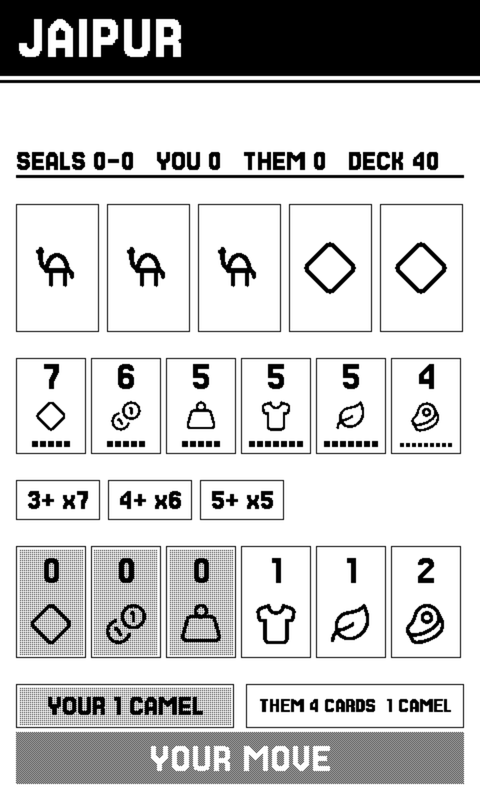
The two-player trading game, against an opponent that only ever sees what you see, or against someone sitting opposite you.
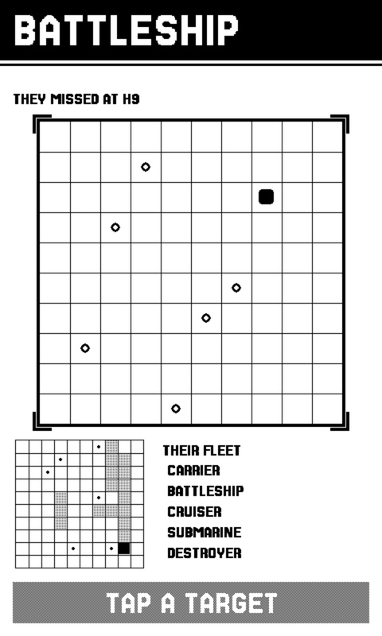
Lay out a fleet, then hunt someone else's. The game PLAY NEARBY was built for, and the reason the layer exists.
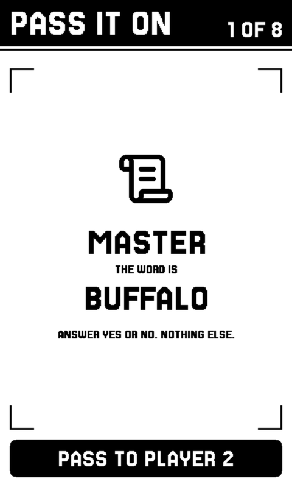
A party game for up to eight people and a single device that goes round the table. No second device needed, and no phones.
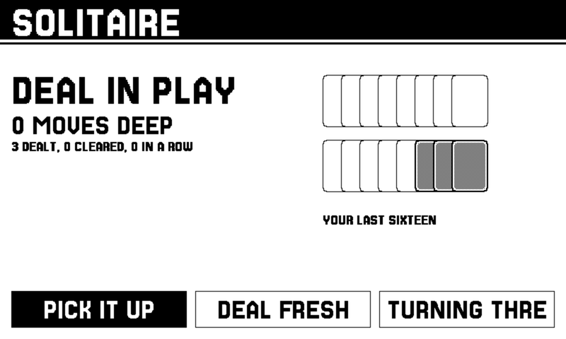
Klondike, turned sideways because that is the shape of a tableau. Your last sixteen deals are drawn from your own record.
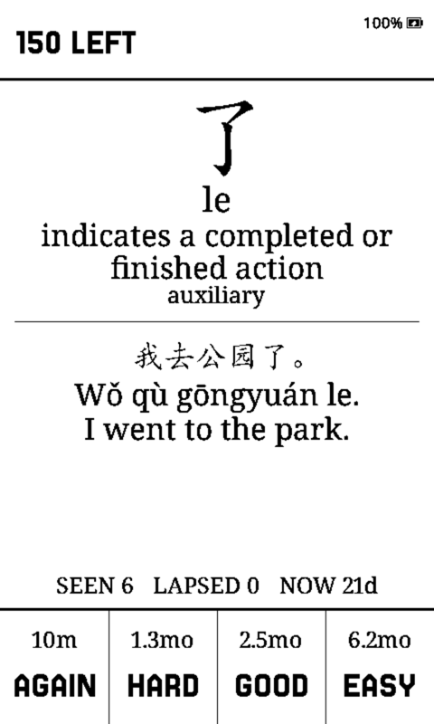
Your own Anki decks with the FSRS scheduler, offline. The review history lives on the card, not in a cloud.
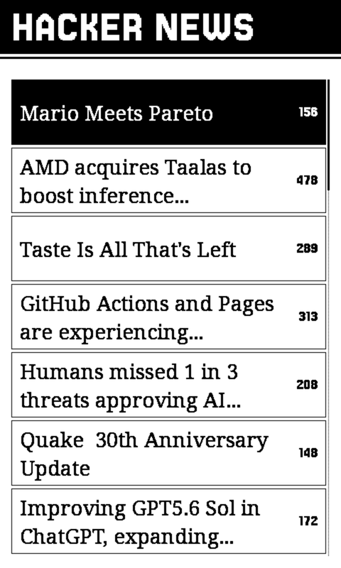
The front page in a reading serif, with articles pulled down and kept on the card so a saved one is still there with the radio off.
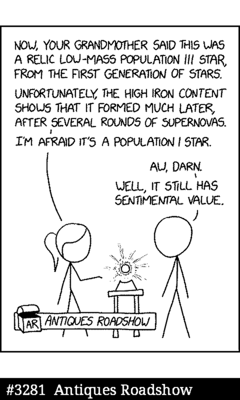
Every strip, packed for the card and drawn at one to one. A comic is line art, which is exactly what this panel is best at.
Untouched. Crossplay adds a shelf beside the library and never gets in its way, and every CrossPoint release lands here within the week.
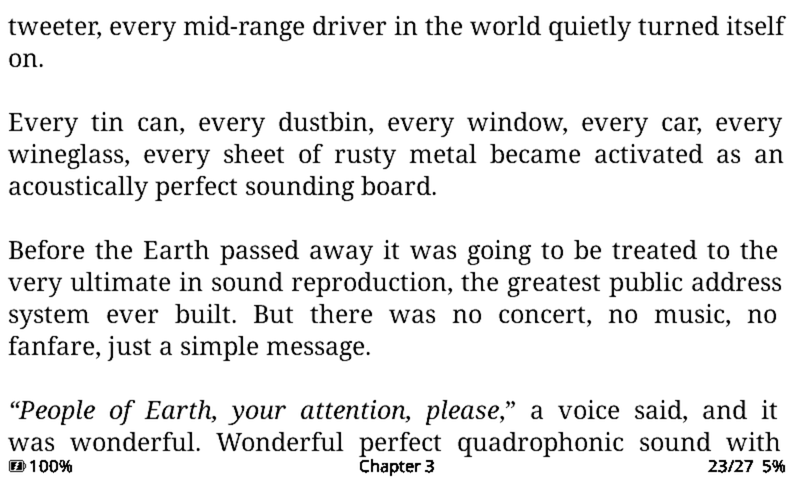
Two devices, one table
It just says play nearby.
Put two of them next to each other and they find one another. There is no pairing screen, no room code, no account, no router and no internet. The entire surface of it is one row on a menu.
The measure for this was the DS: you sat down next to someone and it worked, and nothing about the experience ever mentioned a network. If a person ever has to know how it connects, that is a bug.
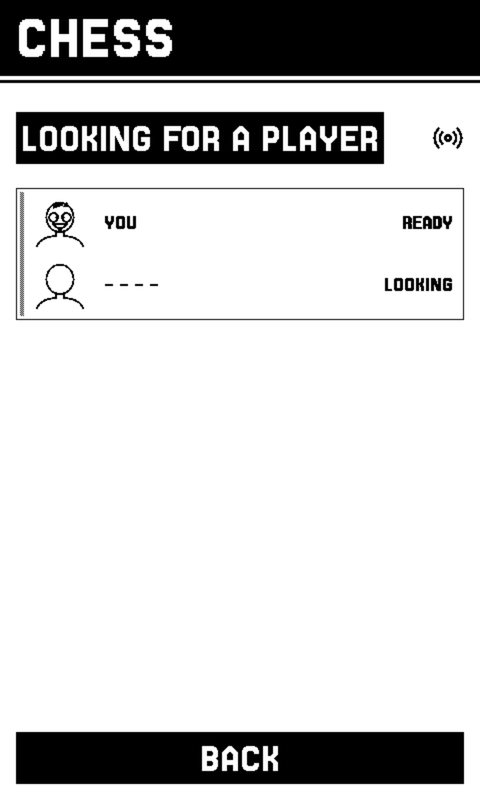
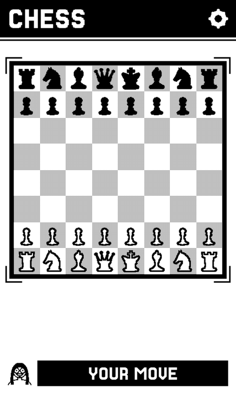
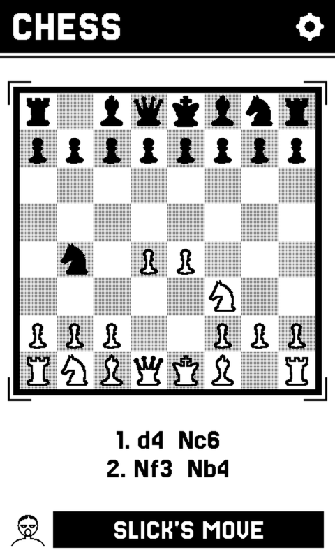
Everyone is a face and three words.
A device names itself with three words, and the face beside it is drawn from that name: hair, eyes, mouth, fourteen options apiece. Nothing is stored and nothing is sent. The other device rebuilds your face from the name its radio already carried, so it can never arrive stale, and the person opposite you is Bald rather than a MAC address.
Chess, Jaipur and Battleship use it today. It is a layer rather than a feature, so the next game gets it for free.
Name
Every face. Tap a word to change one.
Open firmware
Nothing here asks permission.
There is no store between you and the device, no review, no account and no subscription. It is a binary you flash and source you can read.
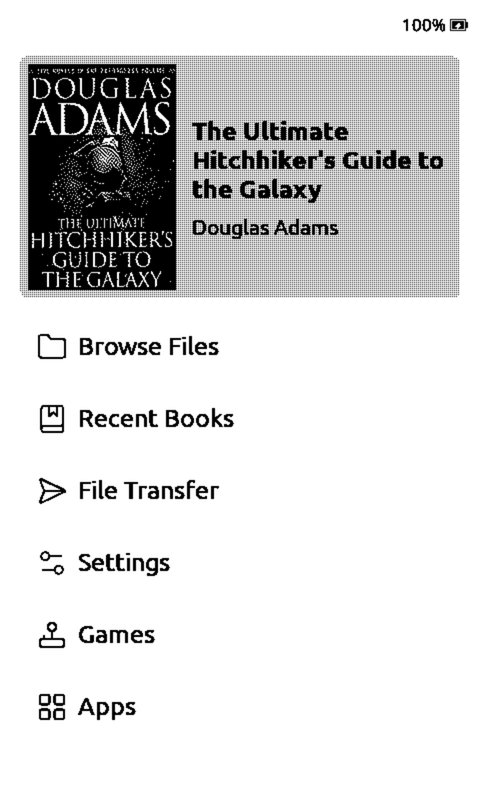